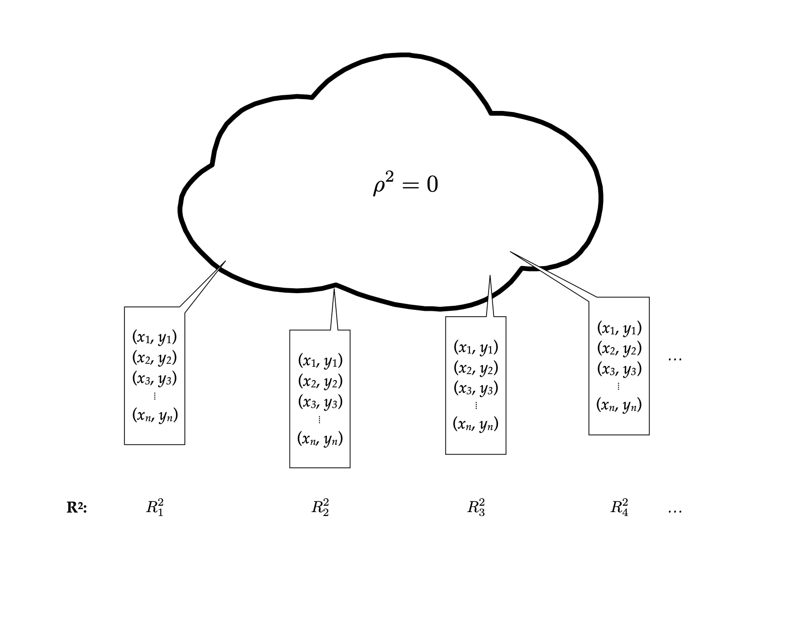
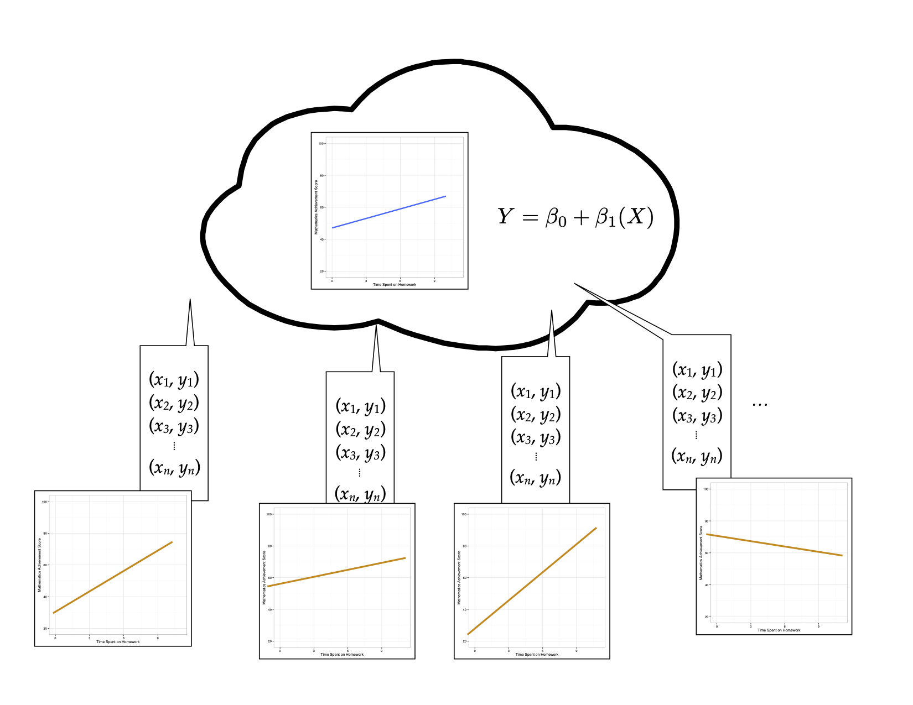
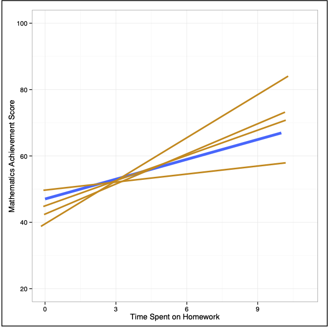

# Load libraries
library(broom)
library(corrr)
library(dplyr)
library(ggplot2)
library(readr)
# Import data
keith = read_csv(file = "https://raw.githubusercontent.com/zief0002/modeling/main/data/keith-gpa.csv")
# View data
keith10 Model-Level Inference
In this chapter, you will learn about statistical inference at the model-level for regression models. To do so, we will use the keith-gpa.csv data to examine whether time spent on homework is related to GPA. The data contain three attributes collected from a random sample of \(n=100\) 8th-grade students (see the data codebook). To begin, we will load several libraries and import the data into an object called keith.
10.1 Model-Level Inference
In the previous chapter, we looked at how to carry out statistical tests of hypotheses and quantify the uncertainty associated with the coefficients in the simple regression model. Sometimes you are interested in the model as a whole, rather than the individual parameters. For example, you may be interested in whether a set of predictors together explains variation in the outcome. Model-level information is displayed using the glance() output from the {broom} package. Below we fit a model by regressing GPA on time spent on homework, store those results in an object called lm.a, and then print the model-level output.
# Fit regression model
lm.a = lm(gpa ~ 1 + homework, data = keith)
# Model-level output
glance(lm.a)# A tibble: 1 × 12
r.squared adj.r.squared sigma statistic p.value df logLik AIC BIC
<dbl> <dbl> <dbl> <dbl> <dbl> <dbl> <dbl> <dbl> <dbl>
1 0.107 0.0981 7.24 11.8 0.000885 1 -339. 684. 691.
deviance df.residual nobs
<dbl> <int> <int>
1 5136. 98 100The r.squared column indicates the proportion of variation in the outcome explained by differences in the predictor in the sample. Here, differences in time spent on homework explains 10.7% of the variation in students’ GPAs for the 100 students in the sample. The inferential question at the model-level is: Does the model explain variation in the outcome, in the population? This can formally be expressed in a statistical hypothesis as,
\[ H_0: \rho^2 = 0 \]
To test this, we need to be able to obtain the sampling distribution of \(R^2\) to estimate the uncertainty in the sample estimate. The thought experiment for this goes something like this: Imagine you have a population that is infinitely large. The observations in this population have two attributes, call them \(X\) and \(Y\). There is NO relationship between these two attributes; \(\rho^2 = 0\). Randomly sample \(n\) observations from the population. Fit the regression and compute the \(R^2\) value. Repeat the process an infinite number of times.

Below is a density plot of the sampling distribution for \(R^2\) based on 1,000 random samples of size 32 drawn from a population where \(\rho^2=0\). (Not an infinite number of draws, but large enough that we should have an idea of what the distribution might look like.)

Most of the \(R^2\) values are near 0, although there is some variability that is due to sampling error. This sampling distribution is right-skewed. (WHY???) This means that we cannot use a t-distribution to model this distribution—remember the t-distribution is symmetric around zero. It turns out that this sampling distribution is better modeled using an F-distribution.
10.1.1 The F-Distribution
In theoretical statistics the F-distribution is the ratio of two chi-squared statistics,
\[ F = \frac{\chi^2_1 / \mathit{df}_1}{\chi^2_2 / \mathit{df}_2} \]
where \(\mathit{df}_1\) and \(\mathit{df}_2\) are the degrees of freedom associated with each of the chi-squared statistics, respectively. For our purposes, we don’t need to pay much attention to this other than to the fact that an F-distribution is defined using TWO parameters: \(\mathit{df}_1\) and \(\mathit{df}_2\). Knowing these two values completely parameterize the F-distribution (they give the shape, expected value, and variation).
In regression analysis, the F-distribution associated with model-level inference is based on the following degrees of freedom:
\[ \begin{split} \mathit{df}_1 &= p \\ \mathit{df}_2 &= \mathit{df}_{\mathrm{Total}}-p \end{split} \]
where p is the number of predictors used in the model and \(\mathrm{Total}\) is the total degrees of freedom in the data used in the regression model (\(\mathrm{Total}=n-1\)). In our example, \(\mathit{df}_1=1\) and \(\mathit{df}_2=99-1=98\). Using these values, we have defined the \(F(1,98)\)-distribution.
The F-distribution is the sampling distribution of F-values (not \(R^2\)-values). But, it turns out that we can easily convert an \(R^2\)-value to an F-value using,
\[ F = \frac{R^2}{1 - R^2} \times \frac{\mathit{df}_2}{\mathit{df}_1} \]
In our example,
\[ \begin{split} F &= \frac{0.107}{1 - 0.107} \times \frac{98}{1} \\[1em] &= 0.1198 \times 98 \\[1em] &= 11.74 \end{split} \]
Thus, our observed F-value is: \(F(1,98)=11.74\). To evaluate this under the null hypothesis, we find the area under the \(F(1,98)\) density curve that corresponds to F-values at least as extreme as our observed F-value of 11.74.

This area (which is one-sided in the \(F\)-distribution) corresponds to the \(p\)-value. In our case this \(p\)-value is 0.000885. The probability of observing an F-value at least as extreme as we the one we observed (\(F=11.74\)) under the assumption that the null hypothesis is true is 0.000885. This suggests that the empirical data are inconsistent with the hypothesis that \(\rho^2=0\), and it is unlikely that the model explains no variation in students’ GPAs.
10.1.2 Using the F-distribution in Practice
In practice, all of this information is provided in the output of the glance() function.
glance(lm.a)# A tibble: 1 × 12
r.squared adj.r.squared sigma statistic p.value df logLik AIC BIC
<dbl> <dbl> <dbl> <dbl> <dbl> <dbl> <dbl> <dbl> <dbl>
1 0.107 0.0981 7.24 11.8 0.000885 1 -339. 684. 691.
deviance df.residual nobs
<dbl> <int> <int>
1 5136. 98 100The observed F-value is given in the statistic column and the associated degrees of freedom are provided in the df and df.residual columns. Lastly, the p-value is given in the p.value column. When we report results from an F-test, we need to report the values for both degrees of freedom, the F-value, and the p-value.
The model-level test suggested that the empirical data are not consistent with the null hypothesis that the model explains no variation in GPAs; \(F(1,98)=11.8\), \(p<0.001\).
10.1.3 ANOVA Decomposition
We can also get the model-level inferential information from the anova() output. This gives us the ANOVA decomposition for the model.
# Obtain ANOVA decomposition
anova(lm.a)Note that the two df values for the model-level F-statistic correspond to the df in each row of the ANOVA table. The first df (in this case, 1) is the model degrees-of-freedom, and the second df (in this case, 98) is the residual degrees-of-freedom. Note the p-value is the same as that from the glance() function.
This ANOVA decomposition also breaks out the sum of squared values into the variation explained by the model (616.5) and that which is unexplained by the model (residual variation; 5136.4). Summing these two values will give the total amount of variation which can be used to compute \(R^2\); \(R^2 = \mathrm{SS}_{\mathrm{Model}}/\mathrm{SS}_{\mathrm{Total}}\).
This decomposition also gives us another way to consider the F-statistic. Recall that the F-statistic had a direct relationship to \(R^2\)
\[ F = \frac{R^2}{1 - R^2} \times \frac{\mathit{df}_2}{\mathit{df}_1} \]
Since \(R^2 = \mathrm{SS}_{\mathrm{Model}}/\mathrm{SS}_{\mathrm{Total}}\) we can rewrite this as:
\[ F = \frac{\frac{\mathrm{SS}_{\mathrm{Model}}}{\mathrm{SS}_{\mathrm{Total}}}}{1 - \frac{\mathrm{SS}_{\mathrm{Model}}}{\mathrm{SS}_{\mathrm{Total}}}} \times \frac{\mathit{df}_2}{\mathit{df}_1} \]
Using algebra,
\[ \begin{split} F &= \frac{\frac{\mathrm{SS}_{\mathrm{Model}}}{\mathrm{SS}_{\mathrm{Total}}}}{\frac{\mathrm{SS}_{\mathrm{Total}}}{\mathrm{SS}_{\mathrm{Total}}} - \frac{\mathrm{SS}_{\mathrm{Model}}}{\mathrm{SS}_{\mathrm{Total}}}} \times \frac{\mathit{df}_2}{\mathit{df}_1} \\[2ex] &= \frac{\frac{\mathrm{SS}_{\mathrm{Model}}}{\mathrm{SS}_{\mathrm{Total}}}}{\frac{\mathrm{SS}_{\mathrm{Total}} - \mathrm{SS}_{\mathrm{Model}}}{\mathrm{SS}_{\mathrm{Total}}}} \times \frac{\mathit{df}_2}{\mathit{df}_1} \\[2ex] &= \frac{\mathrm{SS}_{\mathrm{Model}}}{\mathrm{SS}_{\mathrm{Total}} - \mathrm{SS}_{\mathrm{Model}}} \times \frac{\mathit{df}_2}{\mathit{df}_1} \\[2ex] &= \frac{\mathrm{SS}_{\mathrm{Model}}}{\mathrm{SS}_{\mathrm{Error}}} \times \frac{\mathit{df}_2}{\mathit{df}_1} \\[2ex] \end{split} \]
This expression of the F-statistic helps us see that the F-statistic is proportional to the ratio of the explained and unexplained variation. So long as the degrees of freedom remain the same, if the model explains more variation, the numerator of the F-statistic gets larger and the denominator will be smaller. Thus, larger F-values are associated with more explained variation by the model. We could also have seen this in the earlier expression of the F-statistic using \(R^2\).
10.1.4 The F-Statistic as the Ratio of Two Variance Estimates
In statistical theory, a sum of squares divided by a degrees of freedom is referred to as a mean squared value—the average amount of variation per degree of freedom. Since \(\mathit{df}_1\) is the model degrees of freedom and \(\mathit{df}_2\) is the residual (or error) degrees of freedom we could also express the F-statistic as:
\[ \begin{split} F &= \frac{\mathrm{SS}_{\mathrm{Model}}}{\mathrm{SS}_{\mathrm{Error}}} \times \frac{\mathit{df}_{\mathrm{Error}}}{\mathit{df}_{\mathrm{Model}}} \\[2ex] &= \frac{\frac{\mathrm{SS}_{\mathrm{Model}}}{\mathit{df}_{\mathrm{Model}}}}{\frac{\mathrm{SS}_{\mathrm{Error}}}{\mathit{df}_{\mathrm{Error}}}} \\[2ex] &= \frac{\mathrm{MS}_{\mathrm{Model}}}{\mathrm{MS}_{\mathrm{Error}}} \end{split} \]
Thus the F-value is the ratio of the average variation explained by the model and the average variation that remains unexplained. In our example
\[ \begin{split} \mathrm{MS}_{\mathrm{Model}} &= \frac{616.5}{1} = 616.5 \\[2ex] \mathrm{MS}_{\mathrm{Error}} &= \frac{5136.4}{98} = 52.41 \\ \end{split} \]
These values are also printed in the anova() output.
# Obtain ANOVA decomposition
anova(lm.a)\[ F = \frac{616.5}{52.41} = 11.76 \]
The observed F-value of 11.76 indicates that the average explained variation is 11.76 times that of the average unexplained variation. There is an awful lot more explained variation than unexplained variation, on average. Another name for a mean squared value is a variance estimate. A variance estimate is literally the average amount of variation (in the squared metric) per degree of freedom. For example, go back to the introductory statistics formula for using sample data to estimate a variance:
\[ \hat\sigma^2_Y = \frac{\sum(Y_i - \bar{Y})^2}{n-1} \]
This numerator is a sum of squares; namely the \(\mathrm{SS}_{\mathrm{Total}}\). The denominator is the total degrees of freedom. We could have also referred to this as a mean square
\[ \begin{split} \hat\sigma^2_Y &= \frac{\mathrm{SS}_{\mathrm{Total}}}{\mathit{df}_{\mathrm{Total}}} \\[2ex] &= \mathrm{MS}_{\mathrm{Total}} \end{split} \]
Note that the \(\mathrm{MS}_{\mathrm{Total}}\) is not printed in the anova() output. However, it can be computed from the values that are printed. The \(\mathrm{SS}_{\mathrm{Total}}\) is just the sum of the printed sum of squares, and likewise the \[\mathit{df}_{\mathrm{Total}}\] is the sum of the df values.
\[ \begin{split} \mathrm{SS}_{\mathrm{Total}} &= 616.5 + 5136.4 = 5752.9 \\[2ex] \mathit{df}_{\mathrm{Total}} &= 1 + 98 = 99 \end{split} \]
Then the \(\mathrm{MS}_{\mathrm{Total}}\) is the ratio of these values,
\[ \mathrm{MS}_{\mathrm{Total}} = \frac{5752.9}{99} = 58.11 \]
Since this is an estimate of the outcome variable’s variance, we could also have computed the sample variance of the outcome variable, gpa, using the var() function.
# Compute variance for outcome
keith %>%
summarize(V_gpa = var(gpa))The total mean square, or variance estimate, is also the mean square estimate of the residuals from the intercept-only model.
# Fit intercept-only model
lm.0 = lm(gpa ~ 1, data = keith)
# ANOVA decomposition
anova(lm.0)Remember the sum of squared residuals is \((Y_i - \hat{Y_i})^2\), but in the intercept-only model \(\hat{Y_i}\) is the marginal mean, i.e., \(\hat{Y_i} = \bar{Y}\). This is the numerator of the sample variance estimate and is why the mean square error from the intercept-only model and the sample variance for GPA are equivalent!
10.1.5 Relationship Between Coefficient-Level and Model-Level Inference
Lastly, we point out that in simple regression models (models with only one predictor), the results of the model-level inference (i.e., the p-value) are exactly the same as that for the coefficient-level inference for the slope.
# Model-level inference
glance(lm.a)# A tibble: 1 × 12
r.squared adj.r.squared sigma statistic p.value df logLik AIC BIC
<dbl> <dbl> <dbl> <dbl> <dbl> <dbl> <dbl> <dbl> <dbl>
1 0.107 0.0981 7.24 11.8 0.000885 1 -339. 684. 691.
deviance df.residual nobs
<dbl> <int> <int>
1 5136. 98 100# Coefficient-level inference
tidy(lm.a)That is because the model is composed of a single predictor, so asking whether the model accounts for variation in GPA is the same as asking whether GPA is different, on average, for students who spend a one-hour difference in time on homework. Once we have multiple predictors in the model, the model-level results and predictor-level results will not be the same.
10.2 Confidence Envelope for the Model
Re-consider our thought experiment. Again, imagine you have a population that is infinitely large. The observations in this population have two attributes, call them X and Y. The relationship between these two attributes can be expressed via a regression equation as: \(\hat{Y}=\beta_0 + \beta_1(X)\). Randomly sample n observations from the population, and compute the fitted regression equation, this time plotting the line (rather than only paying attention to the numerical estimates of the slope or intercept). Continue sampling from this population, each time drawing the fitted regression equation.

Now, imagine superimposing all of these lines on the same plot.

Examining where the sampled lines fall gives a visual interpretation of the uncertainty in the model. This two-dimensional display of uncertainty is referred to as a confidence envelope. In practice we estimate the uncertainty from the sample data and plot it around the fitted line from the sample.
For simple regression models, we can plot this directly by including the geom_smooth() layer in our plot. This adds a smoother to the plot. To add the fitted simple regression line, we use the argument method="lm". This will add the fitted regression line and confidence envelope to the plot based on fitting a linear model to the variables included in the x= and y= arguments in the aesthetic mapping defined in aes().1 The color of the fitted line and of the confidence envelope can be set using color= and fill= respectively.
# Create plot
ggplot(data = keith, aes(x = homework, y = gpa)) +
geom_smooth(method = "lm", color = "#c62f4b", fill = "#696969") +
xlab("Time spent on homework") +
ylab("GPA (on a 100-pt. scale)") +
theme_bw()
Note that we want to indicate the confidence envelope or make reference to the uncertainty in the figure caption. We pointed out that the confidence envelope indicates uncertainty by displaying the sampling variation associated with the location of the fitted regression line.
We can also use this plot to make inferences about the mean Y-value conditioned on X. For example, using the fitted regression equation, the model predicts that the mean GPA for students who spend 6 hours each week on homework is 81.6. Graphically this is the point on the fitted regression line associated with \(X=6\).
However, we also now understand that there is uncertainty associated with estimates obtained from sample data. How much uncertainty is there in that estimate of 81.6? We can use the bounds of the confidence envelope at \(X=6\) to answer this question. The lower bound of the confidence envelope at \(X=6\) is approximately 80 and the upper bound is approximately 83. This tells, based on the sample data, we think the mean GPA for students who spend 6 hours each week on homework is between 80 and 83. Graphically, we can see these values in the plot.

This uncertainty estimate is technically a 95% confidence interval for the mean GPA for students who spend 6 hours each week on homework. As such, a more formal interpretation is:
With 95% confidence, the mean GPA for students who spend 6 hours each week on homework is between 80 and 83.
Notice that there is more uncertainty for the mean GPA for some values of X than for others. This is because of the amount of information at each X. We have more information in the data around the mean X-value and less information at extreme X-values. That implies that we have more certainty in the estimates we make for the mean GPA for students who spend around 5 hours of homework each week than we do in students who only spend 1 hour a week or those who spend 11 hours a week on homework.
The confidence envelope can be omitted by using the argument
se=FALSE.↩︎